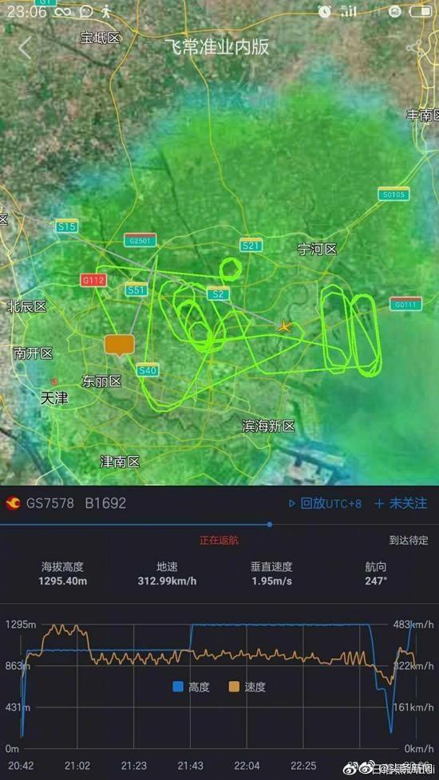

天津航空一航班疑因机械故障返航备降 已安全落地
5月22日晚，不少网友发帖称，天津航空GS7578航班一直在天津机场上空盘旋，疑似出现故障。据了解，该航班系经停天津，由长春飞往乌鲁木齐。媒体咨询天津机场得知，当天下午17时许，该航班正常落地天津。但在执行后续航段时突然返航，并备降天津机场。至于返航原因，工作人员表示：应该是飞机出现了机械故障。
原标题：天津航空一航班疑因机械故障返航备降 已安全落地
5月22日晚，不少网友发帖称，天津航空GS7578航班一直在天津机场上空盘旋，疑似出现故障。据了解，该航班系经停天津，由长春飞往乌鲁木齐。媒体咨询天津机场得知，当天下午17时许，该航班正常落地天津。但在执行后续航段时突然返航，并备降天津机场。至于返航原因，工作人员表示：应该是飞机出现了机械故障。
原标题：天津航空一航班疑因机械故障返航备降 已安全落地